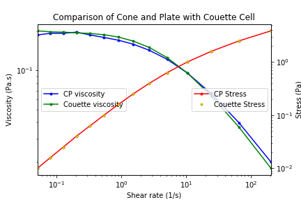

Table of Contents
import numpy as np import pandas as pd import matplotlib.pyplot as plt
This file involves the use of the pandas package to compare the results from two experiments conducted to measure the properties of a worm-like micelles solution. I had carried out experiments on a rheometer to measure the viscosity of a worm-like micelles solution in a Couette cell geometry and a Cone and Plate geometry. Ideally, there should not be a difference as viscosity is intrinsic to the fluid. This is confirmed here as well.
Pandas concepts covered:
- Importing data and organizing the data frame as required (naming columns, correcting index, dropping columns, reordering columns)
- Joining two Data Sets
- Plotting on a secondary y-axis and on log scale
An experiment on a rheomter can export data in an excel sheet, and contains multiple variables such as viscosity, temperature, time, stress, shear rate and many more depending on the experiment. We are often interested in just a few of these variables. Here we want to plot the viscosity and stress in the sample with respect to the shear rate, for both the geometries.

1 Preparing the 2 data sets
Importing the data from the couette cell experiment. We will only assume that we know the sheet name that we want to work with in the excel file. This notebook is made without directly referencing anything else in the excel file, to emphasize the use of pandas.
df = pd.read_excel('couette.xls', sheet_name = 'Flow sweep - 1') # sheet name is case sensitive, excel file name is not
df
Flow sweep - 1 Unnamed: 1 Unnamed: 2 Unnamed: 3 Unnamed: 4 \
0 Stress Shear rate Viscosity Step time Temperature
1 Pa 1/s Pa.s s °C
2 0.00998055 0.0495302 0.201504 35.1469 25.001
3 0.0158174 0.0798746 0.198028 70.1689 25.001
4 0.0250712 0.127313 0.196926 105.253 25
5 0.0397339 0.204094 0.194685 140.26 25
6 0.0629772 0.327253 0.192442 175.313 25
7 0.0998057 0.530364 0.188183 210.32 24.998
8 0.158165 0.875494 0.180658 245.373 25
9 0.250637 1.49135 0.168061 280.426 25.002
10 0.397131 2.64707 0.150027 315.433 25.001
11 0.629111 5.00904 0.125595 350.501 25.003
12 0.996153 10.3993 0.0957901 385.508 24.996
13 1.57528 24.5624 0.0641337 420.608 24.998
14 2.47652 67.2972 0.0367998 455.63 25.003
15 3.75092 210.991 0.0177776 490.668 25
Unnamed: 5
0 Normal stress
1 Pa
2 -0.0012628
3 -0.000834764
4 -0.000912531
5 -0.0011322
6 -0.00202574
7 -0.00242923
8 -0.00183708
9 -0.00165476
10 -0.00188881
11 -0.00223333
12 -0.00180735
13 -0.00182336
14 -0.00182047
15 -0.00293949
Clearly, we would have to modify the table a bit to make the data easier to read and use. Following are the steps taken to do so.
df.columns = df.iloc[0] # changing the column names to the correct variables present in the row 0 df.head(5) # to display just the top 5 entries in the data frame
0 Stress Shear rate Viscosity Step time Temperature Normal stress 0 Stress Shear rate Viscosity Step time Temperature Normal stress 1 Pa 1/s Pa.s s °C Pa 2 0.00998055 0.0495302 0.201504 35.1469 25.001 -0.0012628 3 0.0158174 0.0798746 0.198028 70.1689 25.001 -0.000834764 4 0.0250712 0.127313 0.196926 105.253 25 -0.000912531
df = df[2:] # We will assume that we know the units are consistent and can be ignored for the time being df.head(5)
0 Stress Shear rate Viscosity Step time Temperature Normal stress 2 0.00998055 0.0495302 0.201504 35.1469 25.001 -0.0012628 3 0.0158174 0.0798746 0.198028 70.1689 25.001 -0.000834764 4 0.0250712 0.127313 0.196926 105.253 25 -0.000912531 5 0.0397339 0.204094 0.194685 140.26 25 -0.0011322 6 0.0629772 0.327253 0.192442 175.313 25 -0.00202574
df.index = range(1, len(df['Viscosity'])+1) # We would need to rename the index column df.head(5)
0 Stress Shear rate Viscosity Step time Temperature Normal stress 1 0.00998055 0.0495302 0.201504 35.1469 25.001 -0.0012628 2 0.0158174 0.0798746 0.198028 70.1689 25.001 -0.000834764 3 0.0250712 0.127313 0.196926 105.253 25 -0.000912531 4 0.0397339 0.204094 0.194685 140.26 25 -0.0011322 5 0.0629772 0.327253 0.192442 175.313 25 -0.00202574
couette = df # for better understanding, lets name this data frame as couette couette.head(5)
0 Stress Shear rate Viscosity Step time Temperature Normal stress 1 0.00998055 0.0495302 0.201504 35.1469 25.001 -0.0012628 2 0.0158174 0.0798746 0.198028 70.1689 25.001 -0.000834764 3 0.0250712 0.127313 0.196926 105.253 25 -0.000912531 4 0.0397339 0.204094 0.194685 140.26 25 -0.0011322 5 0.0629772 0.327253 0.192442 175.313 25 -0.00202574
Similarly, importing and arranging the data for the cone and plate geometry.
df = pd.read_excel('cp.xls', sheet_name = 'Flow sweep - 1') df.columns = df.iloc[0] df = df[2:] df.index = range(1, len(df['Viscosity'])+1) conePlate = df # for better understanding, lets name this data frame as conePlate conePlate.head(5)
0 Stress Shear rate Viscosity Step time Temperature Normal stress 1 0.00998397 0.053193 0.187693 34.9909 25 1.2658 2 0.0158219 0.0820001 0.19295 70.0909 25.001 0.569149 3 0.0250778 0.129969 0.192952 105.16 25 0.295899 4 0.0397587 0.20176 0.19706 140.213 25 1.0171 5 0.0629878 0.336087 0.187415 175.282 25 0.546196
We are only interested in the shear rate, stress and viscosity values. Let us drop the other columns.
conePlate.drop(['Temperature', 'Step time', 'Normal stress'], axis=1, inplace=True) # if we do not use inplace=True, the data frame will not be changed. It would by default create a new data frame # and we would have to assign a different variable to capture this change. conePlate.head(5)
0 Stress Shear rate Viscosity 1 0.00998397 0.053193 0.187693 2 0.0158219 0.0820001 0.19295 3 0.0250778 0.129969 0.192952 4 0.0397587 0.20176 0.19706 5 0.0629878 0.336087 0.187415
couette = couette.drop(['Temperature', 'Step time', 'Normal stress'], axis=1) # without using inplace = True couette.head(5)
0 Stress Shear rate Viscosity 1 0.00998055 0.0495302 0.201504 2 0.0158174 0.0798746 0.198028 3 0.0250712 0.127313 0.196926 4 0.0397339 0.204094 0.194685 5 0.0629772 0.327253 0.192442
1.1 Practical Complication in the data
A quick way to get an idea of the attributes and data points in a data frame is through the df.info() command.
couette.info()
<class 'pandas.core.frame.DataFrame'> RangeIndex: 14 entries, 1 to 14 Data columns (total 3 columns): Stress 14 non-null object Shear rate 14 non-null object Viscosity 14 non-null object dtypes: object(3) memory usage: 420.0+ bytes
conePlate.info()
<class 'pandas.core.frame.DataFrame'> RangeIndex: 17 entries, 1 to 17 Data columns (total 3 columns): Stress 17 non-null object Shear rate 17 non-null object Viscosity 17 non-null object dtypes: object(3) memory usage: 492.0+ bytes
This is where it becomes interesting. The two data frames have different number of data entries. This is because often when running experiments we do not mind to stop the experiment before it is completed if we have already got the expected results. It is also not unusual to run the experiments beyond the required range of measurement to be safe that we are not missing out on any erratic behaviour of the sample around the limits. This might result in some extra data, which is not particularly useful. We will address this later using a different approach than splicing.
As we are interested in plotting viscosity and stress against shear rate, let us confirm whether the shear rate values are consistent in both the experiments for just the overlapping shear rate range.
a = conePlate['Shear rate'].values b = couette['Shear rate'].values # Assuming we do not know which data set has less or more data entries, # let us take a slightly complicated but generalised route. x = range(1, min(len(a), len(b))+1)
plt.plot(x, a[0:min(len(a), len(b))], 'b.-') plt.plot(x, b[0:min(len(a), len(b))], 'r.-') plt.ylabel("Shear rate (1/s)") plt.xlabel("Data Points")
Text(0.5, 0, 'Data Points')

The shear rates are more or less similar for both the experiments. Let us remove any ambiguity, just in this example, for further processing and set similar values of shear rate to the respective data entries for both the experiments.
# taking the average of both the shear rate values av = (a[0:min(len(a), len(b))] + b[0:min(len(a), len(b))]) / 2 # setting the actual data frame values to the average conePlate['Shear rate'][0:min(len(a), len(b))] = av couette['Shear rate'][0:min(len(a), len(b))] = av
plt.plot(x, conePlate['Shear rate'][0:min(len(a), len(b))], 'r.') plt.plot(x, couette['Shear rate'][0:min(len(a), len(b))], 'b-') plt.ylabel("Shear rate (1/s)") plt.xlabel("Data Points")
Text(0.5, 0, 'Data Points')

Now the shear rate is consistent for both the datas sets. We can proceed to joining.
2 Joining the data frames
We still have the extra data entries in the cone and plate data. Instead of splicing it and then plotting two different data frames. Let us join the two data frames in a way that the extra entries would be removed and then we would have just one data frame to plot.
For this we use the 'inner join'. The inner join combines two data frames based on only the matching values in the shared column. Here we are asking pandas to join the data frames on the variable 'Shear rate'. Thus, any entry in the shear rate column which would not be present in both the data frames would not be a part of the new data frame. Though this seems to be a detour as opposed to splicing, it is very useful for data science operations when we need to combine related data frames for analysis.
joined = pd.merge(conePlate, couette, how = 'inner', on = 'Shear rate') joined
0 Stress_x Shear rate Viscosity_x Stress_y Viscosity_y 0 0.00998397 0.0513616 0.187693 0.00998055 0.201504 1 0.0158219 0.0809374 0.19295 0.0158174 0.198028 2 0.0250778 0.128641 0.192952 0.0250712 0.196926 3 0.0397587 0.202927 0.19706 0.0397339 0.194685 4 0.0629878 0.33167 0.187415 0.0629772 0.192442 5 0.09982 0.543556 0.179291 0.0998057 0.188183 6 0.15819 0.900448 0.170942 0.158165 0.180658 7 0.250701 1.5333 0.159148 0.250637 0.168061 8 0.397263 2.71453 0.142798 0.397131 0.150027 9 0.629346 5.08619 0.121888 0.629111 0.125595 10 0.996863 10.4011 0.0958258 0.996153 0.0957901 11 1.57768 24.1091 0.0666931 1.57528 0.0641337 12 2.49053 64.9437 0.0397912 2.47652 0.0367998 13 3.85502 202.628 0.0198441 3.75092 0.0177776
Renaming and rearranging columns:
joined.columns = ['StressCP', 'Shear rate', 'ViscosityCP', 'StressCouette', 'ViscosityCouette'] # rearranging joined = joined[['Shear rate', 'StressCP', 'ViscosityCP', 'StressCouette', 'ViscosityCouette']] joined.head()
Shear rate StressCP ViscosityCP StressCouette ViscosityCouette
0 0.0513616 0.00998397 0.187693 0.00998055 0.201504
1 0.0809374 0.0158219 0.19295 0.0158174 0.198028
2 0.128641 0.0250778 0.192952 0.0250712 0.196926
3 0.202927 0.0397587 0.19706 0.0397339 0.194685
4 0.33167 0.0629878 0.187415 0.0629772 0.192442
2.1 Plotting
ax1 = joined.plot('Shear rate', 'ViscosityCP', logx=True, logy = True, style = 'b.-', label = "CP viscosity") joined.plot('Shear rate', 'ViscosityCouette', logx=True, logy = True, style = 'g.-', ax = ax1, label = "Couette viscosity") # With a secondary y-axis ax2 = joined.plot('Shear rate', 'StressCP', secondary_y = True, logx=True, logy = True, style = 'r.-', ax = ax1, label = "CP Stress") joined.plot('Shear rate', 'StressCouette', secondary_y = True, logx=True, logy = True, style = 'y.', ax = ax2, label = "Couette Stress") # Setting y axis labels ax1.set_ylabel("Viscosity (Pa.s)") ax2.set_ylabel("Stress (Pa)") # setting legend locations ax1.legend(loc=6) ax2.legend(loc=7) ax1.set_xlabel("Shear rate (1/s)") plt.title("Comparison of Cone and Plate with Couette Cell") #plt.savefig('comparison.png')